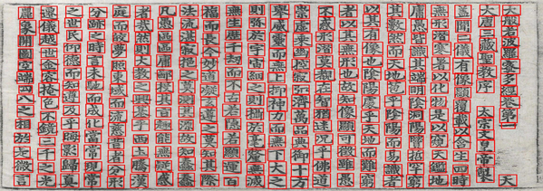

The digitization of Chinese historical documents can divide into two main stages:
Chinese character segmentation and Chinese character recognition.After accurate segmentation results finished, Chinese character recognition can achieve high accuracy, so our study only focus on Chinese character segmentation in historical documents.
